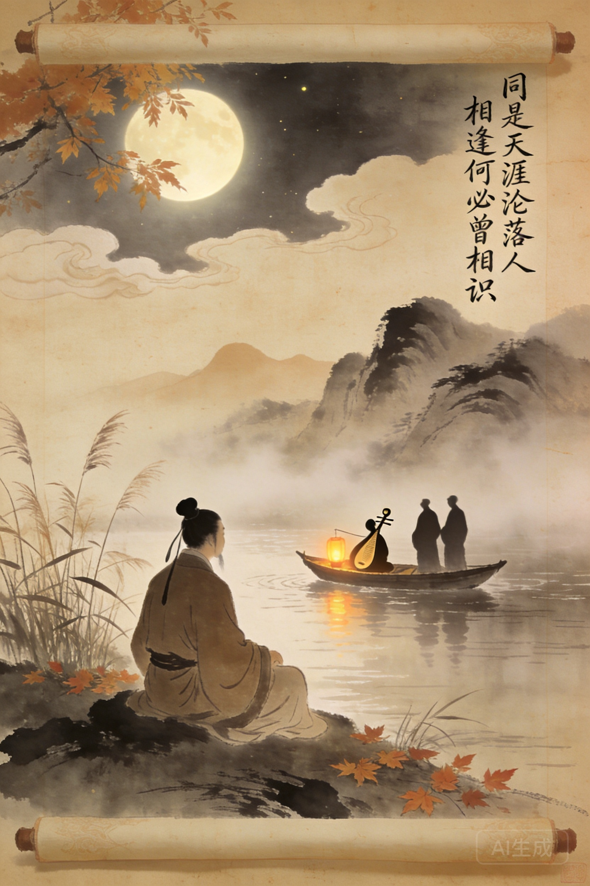

字乐天，号香山居士。少年刻苦读书。
二十九岁进士及第。
因直言敢谏，触怒权贵。
被贬为江州司马。写下《琵琶行》。
兴修水利，筑白堤。
离任时百姓倾城相送。
晚年居香山寺。七十五岁病逝。
《长恨歌》以唐玄宗与杨贵妃的爱情悲剧为题材，全诗120句、840字，是中国叙事诗的最高成就。「在天愿作比翼鸟，在地愿为连理枝。天长地久有时尽，此恨绵绵无绝期」——结尾四句将个人爱情升华至宇宙尺度。白居易力图让诗歌走向大众——据说每作一首新诗必读给邻家老妇听，听不懂就改。这在唐代是革命性的。
力图让诗歌走向大众。每作一首必读给邻家老妇听，听不懂就改。
在江州贬所建庐山草堂，种花养鱼，饮酒赋诗。
与元稹一生唱和诗文无数，是文学史上最著名的文人友谊。
任杭州刺史疏浚西湖、筑堤蓄水，后人称为白堤。
白居易是中国文学史上第一个自觉追求「大众传播」的诗人。每写一首诗先读给邻家老妇听，听不懂就改。这在「文章千古事」的唐代是革命性的——他把诗歌的裁判权从士大夫手上夺走，交给了一个不识字的老太太。结果呢？他的诗不仅老妪能解，千年后我们还在背诵。「野火烧不尽，春风吹又生」——最简单的语言，最深的力量。
「元白」并称。一生唱和无数。
晚年洛阳唱和最多的诗友。
《悯农》作者，新乐府运动同道。